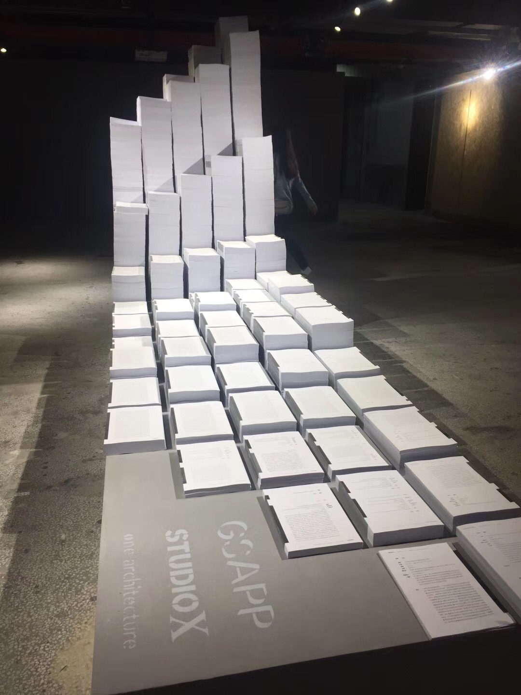

We used data-scraping technologies to create a massive database of written material on urban villages from social media, journalistic, and academic sources from 2001 to 2017. This collection was channeled by the project team into a series of meta-analyses as well as a 3-dimensional timeline composed of over 400,000 printed pages of textual data. Data Mining the Urban Village prompts viewers to examine the distribution networks and actors behind urban discourse. It is currently on display from December 2017 to March 2018 in the main hall of the Biennale in Shenzhen, as part of the "Urban Village Archive"
My role in this research is to web scrape primary data from Chinese social medium platforms, including Sina Weibo, Sougou WeChat, and Youku/Tudou Video and build the English and Chinese SQL database for academic papers, journalism articles, and social media data related to urban villages.
In addition, sentiment analyses were applied to the social media data in terms of emotional analysis, entity recognition, and keyword weight. Below are some examples about sentiment analysis applied in this study.